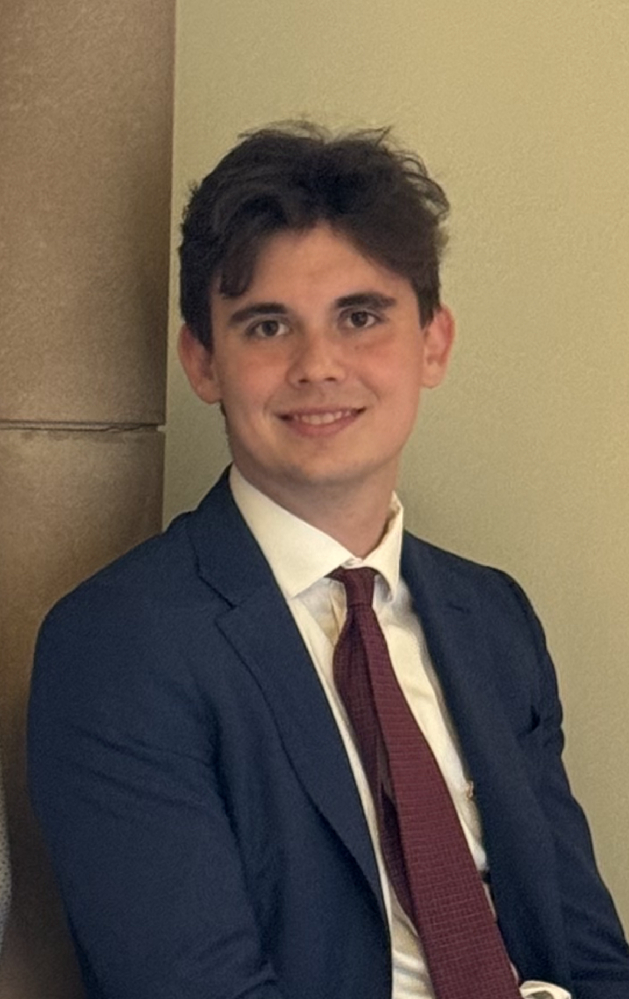

About Myself
I'm Noah Schliesman, an EE student at the University of San Diego. I'm targeting a PhD candidacy starting Fall 2025 in Neural Networks, Natural Language Processing, and Transformers. Here is some of my current work, where I explore key concepts graphically to gain and share intuition for the field. Please reach out if you are interested or want to talk.
Current Work
Binary Classification in Supervised Learning RNNs, GRUs, and LSTMs Attention and Transformer ArchitecturesAnnotated Articles
Optimal Brain Damage Support Vector Networks ImageNet Classification with CNNs Word2Vec Seq2SeqOriginal Animations
Single Neuron Activation